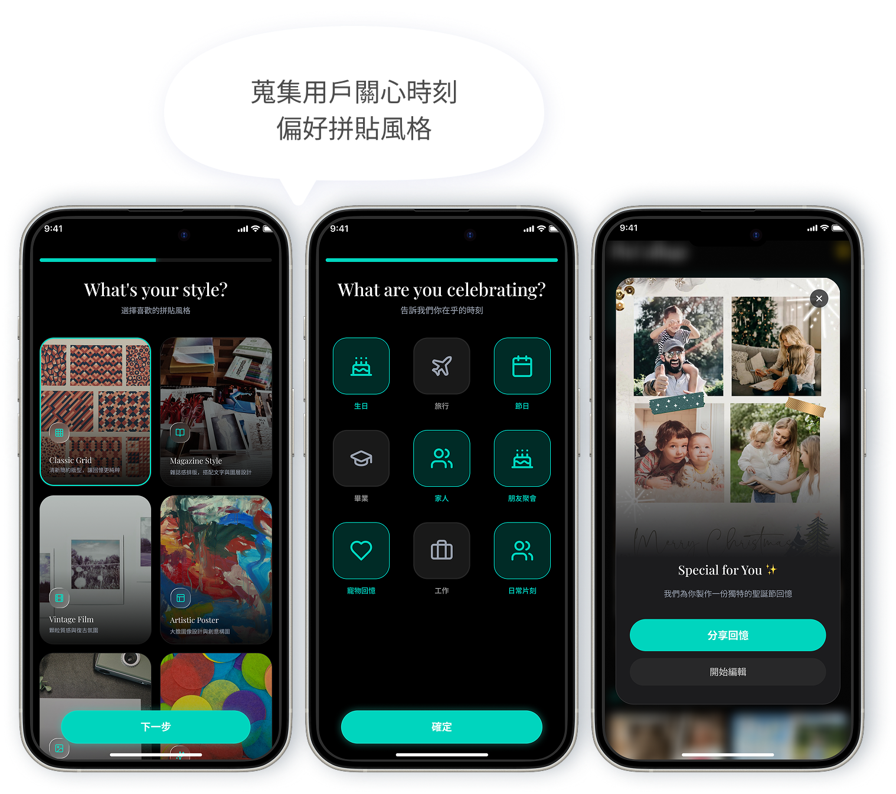
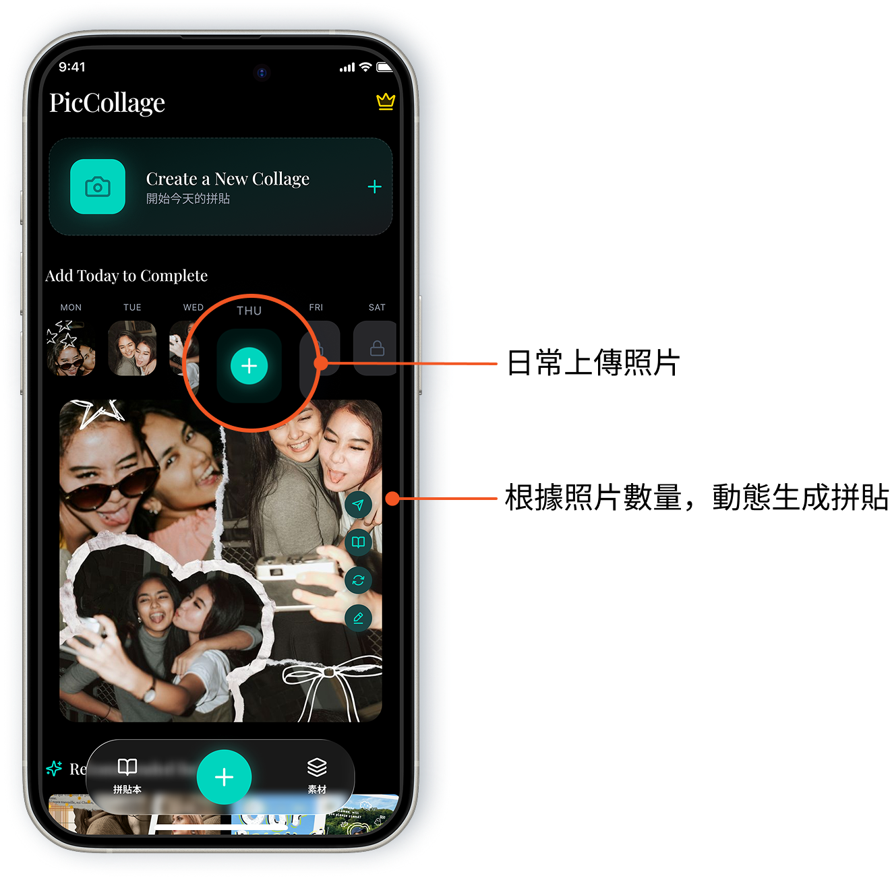
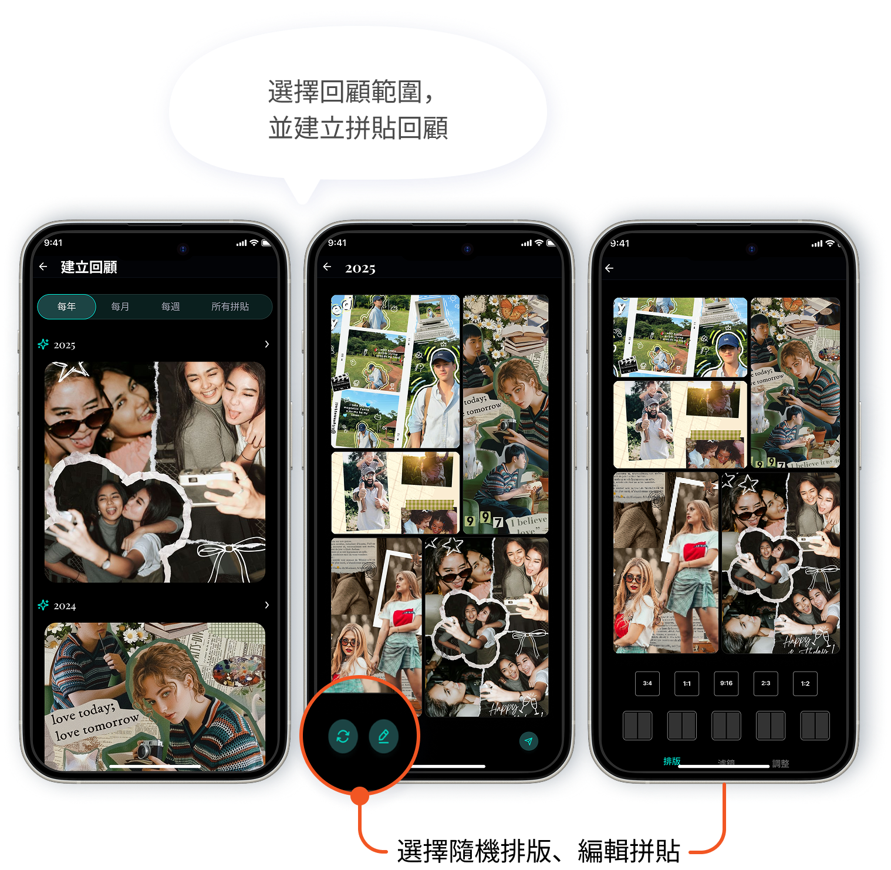

PicCollage Redesign
從創作工具到情感連結平台
以主動觸發與情感累積策略，重塑拼貼的長期價值

當產品進入成熟期，如何創造持續使用的理由？
PicCollage 是一款累積 2.6 億下載量的照片拼貼 App。隨著產品進入成熟期，創作效率已不再是成長瓶頸，真正的挑戰是如何讓使用者願意持續回訪。
目前，多數使用者僅在節慶、生日等特定情境使用 PicCollage，使產品容易被視為一次性工具。因此，本專案希望將產品定位從「完成一次創作」轉向「建立長期使用習慣」。
從一次性使用，到建立長期使用習慣
期望透過建立持續的創作動機，提升產品使用頻率，進而培養使用習慣與長期留存。
提升使用頻率
提供持續的創作動機，增加日常使用機會。
提升留存率
透過正向體驗培養固定使用習慣。
延長使用週期
建立高黏著度的核心用戶。
找到真正驅動回訪的使用者需求
為了找出提升回訪率的切入點，我們針對近 3 個月內曾使用拼貼功能的用戶進行深度訪談，並以問卷交叉驗證。
由於 Connector 不僅占多數，其維繫關係的需求也具有高頻且持續發生的特性，更符合提升回訪率的商業目標，因此本專案聚焦於 Connector 作為主要目標族群。
Connector 使用拼貼的核心，不是創作，而是連結
透過分析 Connector 的使用旅程，我們歸納出三個影響回訪率的關鍵機會：
只有特定情境才會打開 App，缺乏持續創作動機。
需要一個值得每天回來的理由。
如何提供持續的創作契機？
希望快速完成拼貼，不想花太多時間編輯。
完成分享，比享受創作更重要。
如何讓拼貼變得快速、低負擔？
分享後的互動都留在外部平台，產品價值隨之中斷。
拼貼只是建立情感連結的媒介。
如何讓情感連結持續累積在 PicCollage？
研究顯示，Connector 使用 PicCollage 的核心價值並非創作本身，而是透過拼貼完成分享與情感連結。因此產品機會在於降低創作門檻、創造更多使用契機，並延續分享後的關係互動。
從拼貼工具，成為記錄生活的回憶平台
針對 Connector 在拼貼前、中、後面臨的三個核心挑戰——缺乏持續創作契機、創作耗時耗力、分享後情感連結難以延續，我們重新定義 PicCollage 的角色：
透過三項核心功能，降低創作門檻、創造回訪動機，並延續分享後的情感連結：



拼貼前｜AI 情境推播
痛點缺乏創作契機，只有特定情境才會打開 App。
價值根據使用者照片、使用偏好與重要時刻，主動生成高完成度拼貼草稿，降低整理與排版成本，創造回訪契機。
拼貼中｜智慧生成拼貼
痛點創作耗時耗力，面對空白畫布容易卻步。
價值上傳照片後，AI 自動依照片數量與內容生成版型與風格，降低面對空白畫布的心理負擔。
拼貼後｜回顧拼貼
痛點分享後的情感連結難以延續。
價值將過去零散的拼貼作品依週、月、年度整理成回顧內容，累積長期情感價值。
用戶回饋
測試回饋也印證了這個方向：
看到手機通知，APP 幫我排好旅遊照片，真的會想點開！平常根本不會特地打開來整理，通知一來就順手點進去看看，滑一下就分享出去了，完全不用花力氣。
上傳照片就幫我排好，比自己做得快又好看。以前自己排版要選版型、調位置，弄一次要花快十分鐘，現在丟照片進去幾秒就有成品，真的省超多時間。
打開過去的拼貼，才發現累積了好多回憶，忍不住立刻分享。原本只是想找一張舊照片，結果滑著滑著看到好幾個月前的拼貼，那種一次看到整段回憶的感覺很療癒。
讓回憶累積帶動用戶回訪與分享
希望將 PicCollage 從「完成一次拼貼的工具」轉型為「長期陪伴用戶記錄生活的平台」。透過累積個人回憶與分享互動，提升使用者回訪動機，同時創造分享與吸引新用戶成長機會。
提升使用頻率
AI 情境推播，適時提醒值得記錄的時刻。
提升留存率
智慧生成拼貼，降低創作門檻。
延長使用週期
回顧過往拼貼，累積屬於自己的生活紀錄。
增加再次開啟 App 的理由，逐漸養成使用習慣。
放大分享動機
回顧拼貼讓分享更有故事與情感。
創造社交擴散
引發朋友共鳴與互動。
帶動用戶加入
增加社群分享與自然傳播。
吸引更多人認識並開始使用 PicCollage。